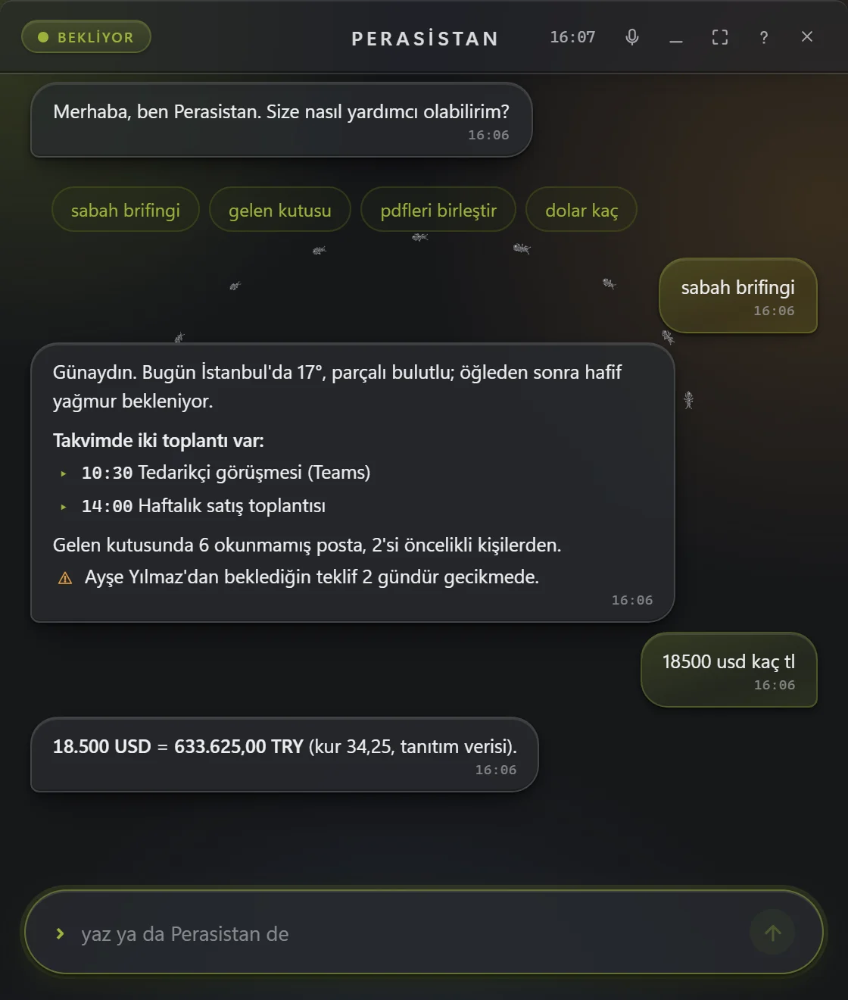

Öngörü ve otomasyon27 komut
Güne hazır başlayın.
Sabah brifingi hava durumunu, takvimi, okunmamış postaları ve geciken takipleri tek mesajda toplar. Saatli iş olarak kurulduğunda hafta içi her sabah kendiliğinden gelir; akşam özeti de günü kapatır.
- Cevabını beklediğiniz postalar gecikince haber verir
- Döviz, altın ve KDV hesabı tek cümle
- Saatli işler ve kurallar ayar dosyasından yönetilir
Bir komuta dokunun, yukarıdaki canlı pencerede çalışsın.
